「Sketch 3 Advent Calendar 2014」25日目、最後の記事となりました。Sketch 3 Advent Calendar 2014にご参加いただいたみなさま、お疲れさまでした！！
今回は、インターフェイスデザインに特化しているSketchで、プレゼンテーションスライドをつくってみよう！というお話です。スライドを作る上での設定や、便利なプラグインやTipsを紹介したいと思います。
やはり、プレゼンテーションに特化しているPowerPointやKeynoteと比較すると、圧倒的に機能は少ないワケですが、クリエイティブツールだけあって、シンプルなスライドであれば、十分に対応できる機能が揃っています。
スライド作成まではいろいろとデザインしておくべきことがありますが、今回それは無視して、つくる部分にフォーカスしたいと思います。
スライド作成の前準備
スライドの設定
アートボードをスライドとして使うための設定を行います。
大概の場合、サイズの比率は4:3だと思いますので、「Insert → Artboard」から、「iPad Screens」にある、「Landscape 1024x768px」を選んでアートボードを挿入します。
「View → Layout Settings…」を選択し、レイアウトグリッドの設定や、ルーラーを表示してセンターや左右下の安全マージンのガイドラインも作成しておきましょう。こうすることで、アートボードの複製と同時にこれらの設定も複製されます。
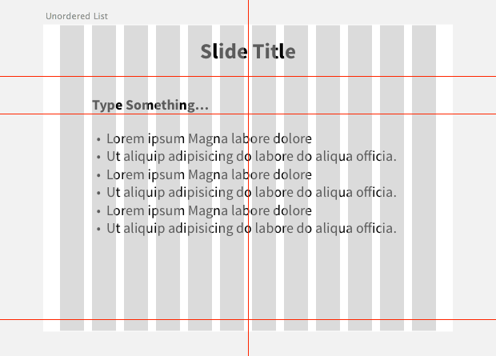
ガイドラインの作成は、SpeedGuide for Sketchが便利です（要手動インストール）。
スライドレイアウト
作成したアートボードを複製しながら、カバー・セクション・箇条書き・図入りのレイアウトなど、元となるレイアウトを作成しておきましょう。ガイドラインも、スライドのレイアウトに合わせて調整しておきます。

カラーパターンの作成
2日目の@sadako_A_さんが紹介してくださった「Swatches」や、16日目の石本さんが作成された「Material Design Color Palette」を使ってカラーパターンを作成しましょう。
作成したカラーパターンは、ドキュメントのプリセットへ登録しておきます。プリセットへ色を追加するのが面倒という場合は、オブジェクトをシンボルとして登録しておけば、シンボルを配置してスポイトツールで色を取得する、ということも可能です。
Sketch Color Contrast Analyserを使えば、背景とのコントラストを測ることができるため、「ちょっと見づらいかな？」と思ったら使っておきましょう。スライドを使う状況にもよりますが、最低でも3:1は確保できるとよいのではないでしょうか。
詳しくは「7.1.4.3 最低限のコントラストに関する達成基準 : 富士通」をご参照ください。
タイポグラフィの設定
私の場合、スライドタイトル・リード・見出し・本文・注記ぐらいのタイポグラフィを準備しています。
テキストサイズの作成には、Typograhic Scaleプラグインを使うと、選択しているテキストレイヤーを基準に、大小のサイズを作成してくれます。
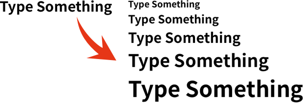
作成できたらテキストスタイルに登録しましょう。場合によっては、行揃えや箇条書きなどのバリエーションもつくっておくとよいかもしれません。
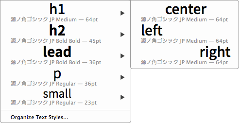
パーツ類
よく使うパーツ類やスタイルは、シンボルや共有スタイルとして登録しておきましょう。
スライドを作成する
スライドの追加・編集・管理
スライドの挿入はアートボードを都度作成してもよいのですが、アートボードを選択して「Edit → Duplicate」（ショートカット：Command + D）しましょう。この場合は、選択しているアートボードの右方向に空いている部分へ複製されます。
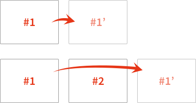
選択しているアートボードの下側へ複製したい場合は、Sketch Commandsにある、「Duplicate → Duplicate Artboard Below」を使います。
アートボードの位置を入れ替える場合は、入れ替えるアートボードを選択し、Sketch Commandsにある「Position → Swap Positions…」を使ってください。
また、アートボード名が変わってしまいますが、Smartboardsを使うと座標を基準に整列することができます。
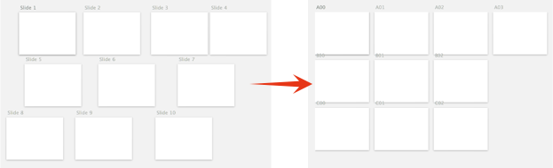
規則性のあるアートボード名であれば、すべてのアートボードを選択（Sketch Commands → Select → All Artboards in Page）し、RenameItで名前をつけ直すという方法があります。
セクション
他のプレゼンテーションツールのようにセクションごとにグループ化はできませんので、ページを利用してセクションを管理します。単一ページでやってしまうと、セクションを入れ替える時が大変になってしまうので、特にスライドが多い場合は、ページ管理を積極的に使うことをオススメします。
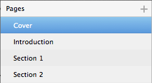
アートボードの切り替えは、Workflow Sketch Pluginsにショートカットを割り当ててやると、マウスの往復が減ってラクになります。
スライドの背景色を変更する
アートボードレイヤーを選択し、インスペクタのBackgroundで背景色を設定します。
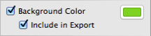
ちなみに、アートボードを選択するにはレイヤーリストで選択してもよいのですが、オブジェクトを選択中にescで親グループの選択ができることを利用して、アートボード直下のいずれかのレイヤーを選択後、escキーを押すとすぐにアートボードを選択することができます。
それすら面倒な場合や、共有スタイルを使って一括で色を変更したいという場合は、最背面にアートボードと同じ大きさの矩形レイヤーを配置するのもよいでしょう。アートボードを同じ大きさの矩形レイヤーを作成するには、Sketch Plugin Scriptsにある、「fill_artboard」を使うと便利です。
日本語に詰めを適用する
こちらを参照してください→ 「Sketch（や他のアプリ）で、文字詰めをする方法を解説するよ。」
箇条書きにする
テキストレイヤーを選択し、インスペクタに表示されている「Options → List Type」からNumbered（番号）かBullet（黒丸）を選択してください。段落または改行のあった部分へ、リストマークが付加されます。
テキストスタイルを適用しているテキストレイヤーへ追加すると、スタイルが変わってしまうので、注意してください。
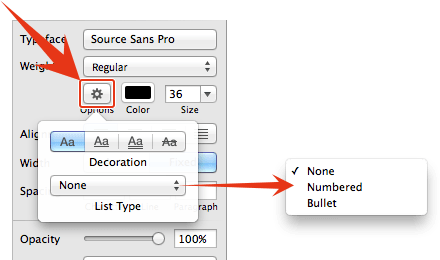
画像を挿入する
アートボードサイズより大きな画像を配置しても、アートボード外は表示されませんので、わざわざマスクする必要はありません。
また、Content Generatorを使うと、ひとまずのダミーを挿入することができます。塗りのParttern Fillで画像が挿入されるため、レイヤーのサイズを変更してもトリミングする必要はありません（ただし、必ず画像がセンターに来るためバランスの調整にはやはりマスクを用いる必要があります）。
Flickrから引っ張ってくる「Quick Pic」というプラグイン（要手動インストール）や、つい先日公開された、Instagramから画像を引っ張ってくる「SketchSquares」というプラグイン（要手動インストール）もあります。
仕上げの書き出し
でき上がったら、「File → Export Artboards to PDF」で、PDFに変換…の前に、レイヤーリストの上位にあるアートボードから順に変換されるため、レイヤーリストで並び替えをする必要があります。
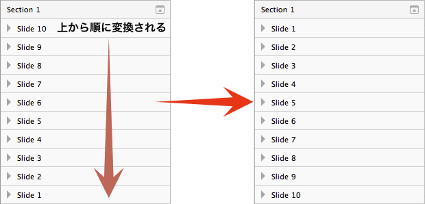
アートボードをソートできるプラグインを使って整理しましょう。ただし座標を基準とするソートでは、アートボードが上辺や左辺がずれていると、思うようにソートできないため、先にアートボードを整列してからソートしてください。
アートボードが横または縦一列に並んでいる場合は、 Sketch Mate（要手動インストール）にある、「Sort → Sort Layers」で「Top」または「Left」でソートしましょう。
アートボードを碁盤の目状に配置している場合は、Sketch Mateの「Artboards → Sort Artboards by Position」を適用した後、「Sort → Sort Layers」の「Top」でさらにソートしてやると、レイヤーリストが左上からZ字順に並び変わります。
レイヤーリスト上のみでソートする場合のプラグインも用意してみました。
Sort by Artboad Name on Layer List.sketchplugin
ダウンロードして、プラグインフォルダへ。ショートカットはShift + Control + Fに割り当てているので、適宜変更してください。
並び替えたら、PDFで書き出しします。書き出しされたPDFは、画像関連の圧縮がかかっていない状態ですので、適宜Acrobatなどを使って圧縮するとよいでしょう。
テンプレートとして保存して再利用しやすく
テンプレートとして保存する
テンプレートとして保存しておくには2つ方法があり、1つ目は「File → Save as Template」で保存すると、「File → New From Templates」のリストに加わります。
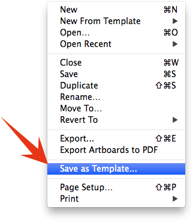
もう1つがテンプレートとして保存するのではなく、「File → New From Templates」のReveal in Finderで表示されるフォルダへ、SketchファイルやSketchファイルの入ったフォルダのエイリアスを入れても、表示することができます。
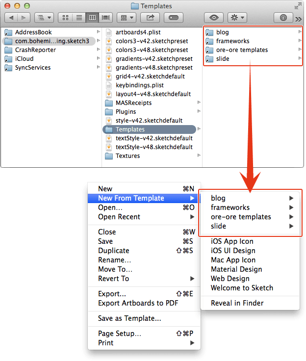
個人的には、別の場所に保存をしておいて、上記フォルダへ別途保存しているフォルダのエイリアスを入れておく方が、バージョンアップなどで消える可能性も低いのでオススメです。
テンプレートを再編集する
テンプレートファイルの再編集は、 「Save as Template」で保存した場合は、上記Templatesフォルダにあるファイルを、エイリアス方式を使っている場合は、そのファイルを修正します。
一応ダウンロードできます
ざっくりつくったものですが、よろしければダウンロードをどうぞ。
また、こもりまさあき（@cipher）さんが、4:3と16:9のSketchファイルを公開されています。4:3は有料ですが、缶コーヒー1本我慢すればよい金額ですので、こちらも参考になさってください。
というわけで、大概のプレゼンテーションスライドであれば、Sketchで作成ができます。スライド作成としてはシンプルな機能しかありませんが、逆にアニメーションを調整したりトランジションで迷ったりする時間はなくなります。
確かに見た目も重要なのですが、必要以上にこだわって時間がかかってしまうよりは、はじめからそいうことをできない方が、スライドづくりも潔く進められるんじゃないでしょうか、えぇ（ちなみに、アニメーションやトランジションは、効果的に使えばありだと思ってる人です）。
それでは、Happy Holidays!!